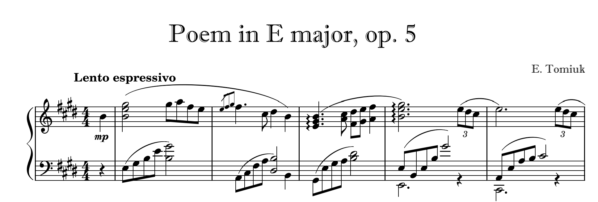

As much as composition is quite social, it can also be a very introspective and personal form of art. Composers might express very deep emotions, anxieties, fears, or dreams through composition which gives a listener insight on a composer's personal life as well as their values and culture. A composer might feel that music is the only way to express their ideas and emotions, which is in itself an intrinsic motivator for someone to begin composing a piece.
Because you can become so associated with your work, it is pretty easy for a composer's self-efficacy to take a hard blow when their piece gets criticized. These challenges are discussed more in detail here.
Like most art forms, a composer becomes associated with their pieces. In visual arts, a signature is a way of "claiming" that a work if yours. In composition, usually the name of the composer appears at the top of the music sheet. In this sense, a composition becomes associated to a composer's identity forever. We get to know a composer through their works and their personal style. ***One of the jobs of a music historian is to infer information about a composer's life through their music.
One thing that I wonder is whether there is ever any kind of inherent bias when we see a composer's name on a piece, particularly if we are not familiar with the composer, just like some recruiters might have some preconceived beliefs about a job applicant just by seeing their name (https://www.wbur.org/hereandnow/2021/08/18/name-discrimination-jobs). Would we judge a female's piece, or a piece written by a Black classical composer to be less good than a white male composer's piece just because historically, composition was a white male-dominated domain?
I personally find it weird to see my own name on one of my compositions, as if it was already published. Maybe because my name doesn't fit the standard classical composer's names (white european men)? Perhaps this is the real reason why I usually write E. Tomiuk as the composer name rather than my full name... 
Obviously, one would not choose composition to express their ideas if they were not interested in music as a way to express their ideas. Interest in classical music and creating music is an important intrinsic motivator. Interest plays a huge role in the choices we make and how motivated we are to complete a task (Lecture 7). A composer asked to write a piece depicting life on Mars might not be motivated to write such composition if they are not interested in space or learning about other planets. This might be even harder if the composer never had an experience to relate back to to help them write this piece. Therefore, a composer might lack motivation to write this piece. Interest can also apply to specific aspects of composition. I am personally interested in large ensembles, so I find it hard to motivate myself to write pieces for brass quartets for instance because it is something I am less interested in.
My personal classical musical interests lie in Romantic music, music with expressive emotions and drama. I am also a huge fan of movie music (as you might notice from the musical exerpts in this site). Although it is fun to experiment a little, I rarely compose baroque-sounding music, or modern/minimalist music, because these styles are not very interesting to me. I tend not to enjoy listening or playing these types of classical music. I've heard that McGill's composition program is very oriented towards modern composition techniques. This is great news for those interested in this style, but this might push away students who wish to study composition at McGill, but who don't wish to be expected to write music like that.
Interest as being a strong intrinsic motivator to persist in a task can also work the other way around. Composers always try to compose pieces that interest them and other listeners so that a listener stays engaged and is motivated to listen to the entire piece. Ways composers do that are detailed in this section.
***\think of a musical example to put here? maybe one of my more classical sounding pieces and show that it is unfinished because not motivated, no inspiration... (also hoping my planets thing is semi-modern but very unfinished since 2019)